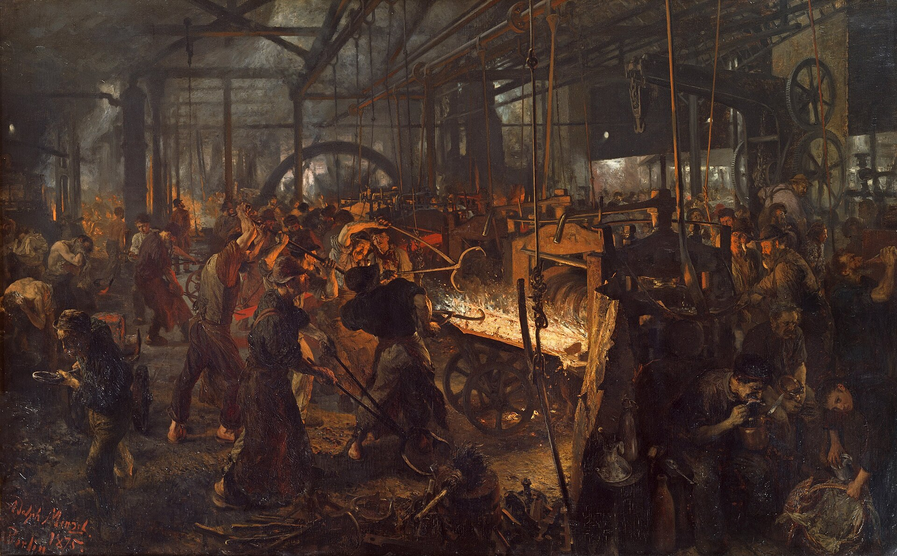

AI has a line-shaft problem
Uber burned a year of AI budget in four months and can’t find the product gains. The electric motor spent thirty years in the same place.
July 12, 2026

I want the corporate KPI of this season on the record, because in five years nobody will believe it: Uber spent the spring ranking its engineers on a leaderboard by how many AI tokens they burned. What followed was predictable to any economist — or any gamer. The entire 2026 AI budget was gone by April; the CTO personally torched $1,200 in a two-hour demo; by June the company was capping engineers at $1,500 a month. Goodhart's law usually takes a decade to punish a bad metric. This time it needed one quarter.
The blown budget isn't the interesting part. The interesting part is that by every input metric, the program worked: 95% of Uber's engineers use AI tools monthly, and roughly 70% of committed code now comes out of them. Yet in late May the COO said out loud what the numbers had been whispering — the link between the spend and products customers actually want "is not there yet." The wider data rhymes: across 22,000 developers, task throughput is up 34% while bugs per developer are up 54% and review times have ballooned; McKinsey finds over 80% of companies see no earnings impact from gen AI at all. Everyone reads this as the bubble's smoking gun. I read it as the most predictable chapter in the whole story — because we have run this exact experiment before. Not a similar one. This one.
Everywhere but in the productivity statistics
My witness is 120 years old. In 1900 you could stand in the middle of American industry and observe — as the economist Paul David famously reconstructed — that electric dynamos were visible everywhere except in the productivity statistics. Two full decades after the technology arrived, electric motors drove less than 5% of US factory machinery. And here is the part I find genuinely uncomfortable: the factory owners who refused to switch were right. The sales pitch of the day was fuel savings — replace the steam engine, stop shoveling coal — and the coal saved was a rounding error next to the cost of scrapping a plant that still worked. When adoption looks irrational, first check whether the buyers are the rational ones.
What actually held them back wasn't the fuel bill. It was that the factory itself was the machine. A steam plant ran on a line shaft: one central engine spinning overhead shafts and belts that carried power to every station. Power was all-on or all-off; machines stood where the shaft could reach them, not where the work flowed; buildings grew vertical to keep the shaft runs short. The factory wasn't a building with an engine in it — it was an engine with a building around it. Drop a dynamo into that and you have upgraded one link of a chain forged around the old constraint. Of course nothing moved in the statistics. Nothing was supposed to.
The gains arrived with the wrecking ball
The fix, when it finally came, was not a better motor — and this is the part I most want the AI discourse to sit with. It was "unit drive," a small motor on every machine, which sounds like an engineering detail and was actually a demolition permit. Once power stopped being architecture, the architecture could finally serve the work: single-story buildings, machines arranged by the flow of materials instead of the reach of a shaft, floor plans designed for throughput rather than for power transmission. Ford's Highland Park plant is the emblem — the assembly line is, among other things, a floor plan that no line shaft could have permitted. The productivity surge showed up in the aggregate statistics in the 1920s, 30 to 40 years after the dynamo went on sale. The technology was never the bottleneck. Electricity's killer feature wasn't cheaper power. It was firing the line shaft.
The org chart is the new line shaft
I recognize this pattern because I have been living inside it. Every enterprise says it is "embracing AI." What that means in practice is single-point tools bolted into processes designed for humans: a copilot in the IDE, a summarizer in the meeting, an internal chatbot for the wiki. I say this with some self-awareness — I built one of those tools. It made a real task meaningfully faster and more precise, engineers liked it, and I'm proud of it. But viewed at the system level, it makes one engineer faster at one task, inside an approval chain, a headcount plan, and a quarterly cadence that were all designed around humans doing every step. The org chart is the line shaft: work is routed to where the humans sit, not to where the capability lives. A tool optimizes a task. An architecture decides which tasks exist. And tokenmaxxing? That's measuring how much coal you shoveled into the new motor.
AI employees, not AI-empowered employees
So here is my actual position. The motor's real gift was never the fuel bill — it was freeing the floor plan. AI's real gift, likewise, is not making a person 30% faster at their job; it's that some work no longer needs a person attached to it at all — in software already, in the physical world eventually. Follow that logic and the design question flips: not "how does AI empower our people," but "which parts of this company should be AI employees from day one." The startups chasing that framing — one-person companies, agent-run operations, all the buzzwords — get dismissed as hype, and some of it is. But structurally they are doing what the factory rebuilders did: designing around the new capability instead of retrofitting it into the old layout, because they are small enough and young enough to have no line shaft to protect.
The honest footnote: big companies are not being stupid. Paul David's whole point was that not scrapping a serviceable plant was the rational choice, right up until it wasn't. And today's equivalent constraints are heavier than depreciation schedules — mass layoffs carry social costs and reputational ones, and "we reorganized the company around AI" is a sentence with 10,000 people inside it. Rational preservation, though, is still preservation. It just means the redesign happens somewhere else first.
TL;DR
The dynamo's century, compressed:
- Burned token budgets with thin product gains don't prove AI is a bubble — the electric motor spent its first 30 years "everywhere but in the productivity statistics" too.
- The bottleneck then wasn't the motor but the line shaft: factories were architected around power transmission. The bottleneck now isn't the model but the org chart: companies are architected around humans in every loop.
- Single-point tools — a copilot here, a summarizer there — optimize links in a chain designed for the old constraint. The gains arrive when someone redesigns the chain.
- Big companies rationally protect their serviceable plant; AI-native startups design for AI employees from day one. That's who rebuilds the factory.
The dynamo didn't pay off until someone tore down the line shaft. The token bill isn't the story — the floor plan is.